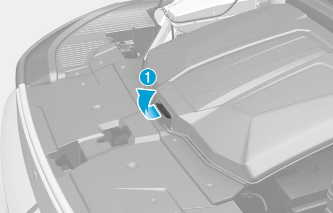

프론트 트렁크 열고 닫기

2C_FrontTrunk
후드를 연 후 프론트 트렁크 열림 레버(1)를 위로 누른 상태로 프론트 트렁크 커버를 들어올리십시오.
프론트 트렁크를 닫으려면 프론트 트렁크 커버를 아래로 누르십시오.
프론트 트렁크 최대 적재 허용량
-
2WD: 25 kg
-
4WD: 10 kg
-
프론트 트렁크 안에 들어가지 마십시오. 프론트 트렁크에 사람이 들어가면 심각한 부상을 입을 수 있습니다.
-
프론트 트렁크를 열거나 닫기 전 주위 환경이 안전한지 확인하십시오.
-
기온이 높을 때에는 프론트 트렁크에 가스 라이터, 스프레이 등 인화성 물질을 포함하는 물건을 보관하지 마십시오. 밀폐 상태에서 직사광선을 받아 프론트 트렁크 내부 온도가 높아지면 폭발할 가능성이 있습니다.
-
프론트 트렁크 적재 허용량을 초과하는 물건을 보관하지 마십시오. 프론트 트렁크가 파손될 수 있습니다.
-
파손의 우려가 있는 물건은 차량 실내에 보관하십시오.
-
세차 시 프론트 트렁크에 새차액을 직접 분사하지 마십시오. 세차액이 유입되어 구동 장치가 손상될 수 있습니다.
-
프론트 트렁크 안에 물, 음료 등 액체류 보관 시 주의하십시오. 프론트 트렁크 밖으로 액체가 새는 경우 모터룸 내부의 전기 장치가 손상될 수 있습니다.
-
프론트 트렁크 안에 날카로운 물건이나 크기가 맞지 않는 물건을 보관하지 마십시오. 급정차 또는 충돌 사고 발생 시 내용물이 파손될 수 있습니다.
-
프론트 트렁크에 고가품이나 귀중품을 보관하지 마십시오.
-
주행 중 프론트 트렁크에 보관한 물건이 움직일 수 있습니다. 파손의 위험이 있거나, 프론트 트렁크 벽면과 부딪혔을 때 큰 소리가 날 수 있는 물건은 보관하지 마십시오.
-
기온이 높을 때는 프론트 트렁크에 안경, 선글라스, 플라스틱 카드 등 플라스틱 제품을 보관하지 마십시오. 밀폐 상태에서 직사광선을 받아 프론트 트렁크 내부 온도가 높아지면 플라스틱 제품이 변형될 수 있습니다.
-
프론트 트렁크 커버 위를 누르거나 물건을올려 놓지 마십시오. 변형 및 파손 될 수 있습니다.
-
프론트 트렁크 커버를 닫을 때 내부에 적재된 물건과 접촉하지 않도록 주의 하십시오. 적재된 물건 또는 프론트 트렁크가 변형 또는 파손 될 수 있으며 닫힘 불량에 의한 프론트 트렁크 커버가 주행 중 열려서 이음 및 파손될 수 있습니다.